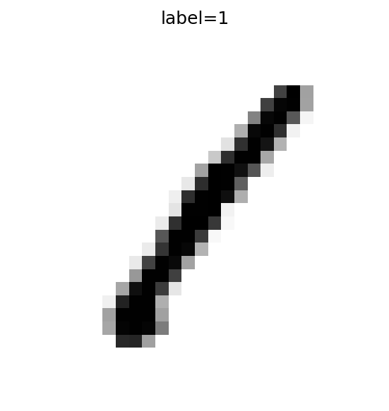
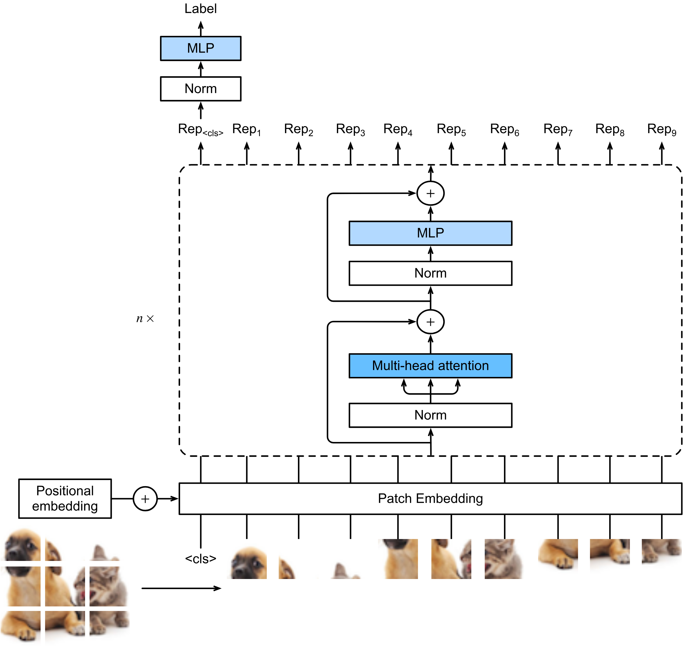
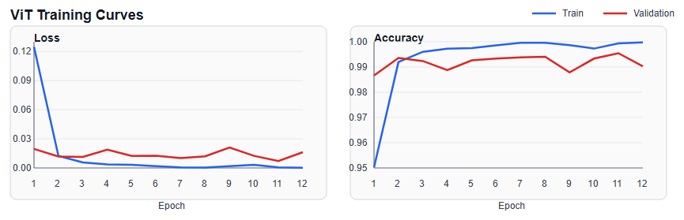
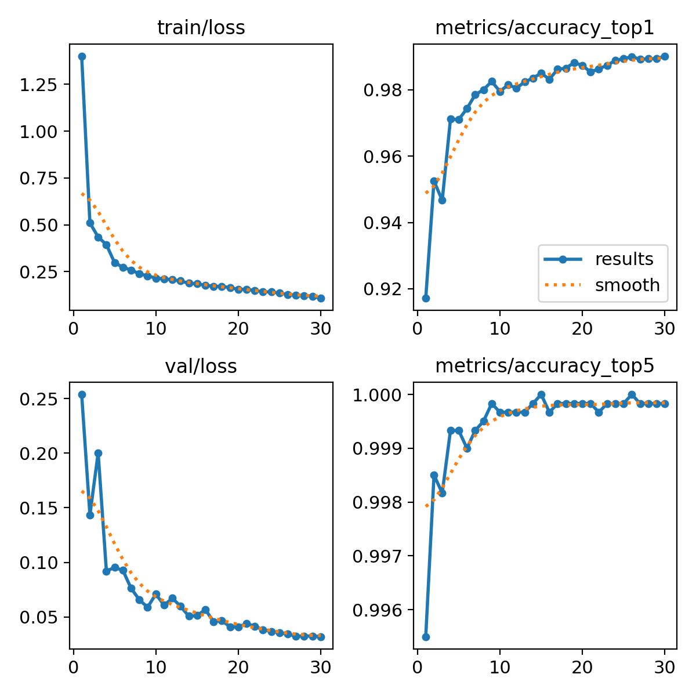
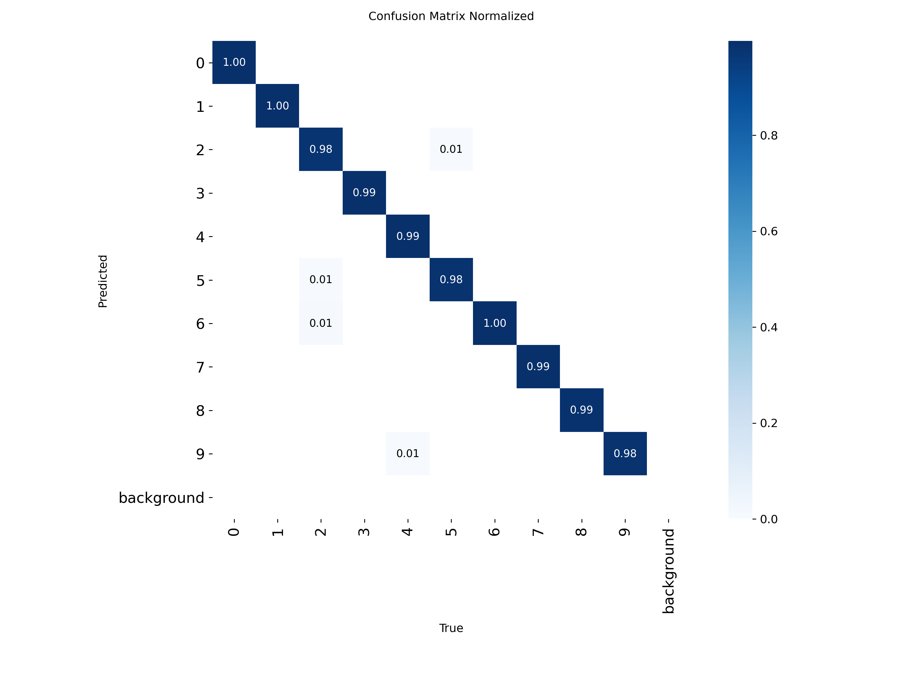

MNIST 데이터셋 실험 보고서
MNIST 손글씨 숫자 분류 문제에서 두 가지 경로를 비교한 기록이다.<br> 관심사는 코드 구현 자체보다, 어떤 접근이 실제로 어떤 성능을 냈고 그 결과를 어디까지 믿을 수 있는지에 있다.
목차
보고서 범위
이 보고서는 MNIST 손글씨 숫자 분류 문제에 대해 수행한 두 가지 실험 경로만 다룬다.
- ViT 기반 전이학습
- YOLO classification 기반 분류
비교의 핵심은 다음 두 가지다.
- ViT 단일 run이 어느 정도까지 올라갔는가
- YOLO classification이 반복 실험에서도 비슷한 성능을 유지하는가
데이터와 비교 조건
데이터 출처
본 보고서에서 참조한 공개 데이터 출처는 다음과 같다.
ViT 실험은 첫 번째 출처의 train.csv를 사용했고, YOLO classification 실험은 두 번째 출처와 같은 MNIST IDX 형식을 사용했다.

그림 1. MNIST 입력 샘플. 이 실험은 저해상도 grayscale 숫자 영상을 0부터 9까지의 클래스로 분류하는 문제를 다룬다.
비교 조건
두 실험은 모두 같은 문제를 푼다. 다만 실험 조건은 완전히 같지 않다. 같은 데이터를 사용하지만, 다른 스필릿을 사용했다. 그래서 이 문서의 비교는 "같은 문제를 어떤 방식으로 풀었는가"를 보는 비교이지, 같은 데이터 분할 위에서 측정한 엄밀한 리더보드는 아니다.
접근 개요
Vision Transformer
Vision Transformer(ViT)는 이미지를 patch 단위로 나눈 뒤, 각 patch를 토큰처럼 다루는 분류 모델이다. 본 실험에서는 facebook/deit-small-patch16-224를 MNIST에 맞게 미세조정했다.

그림 2. Vision Transformer의 기본 구조. 입력 이미지를 patch 단위로 분할하고, patch embedding과 positional embedding을 더한 뒤 Transformer encoder를 거쳐 최종 분류를 수행한다.
ViT는 전역 문맥을 한 번에 본다는 장점이 있다. 대신 MNIST처럼 작은 입력에서는 28x28 이미지를 224x224로 키워 넣는 비용이 꽤 크다. 잘 맞으면 성능은 높게 나올 수 있지만, 계산량이 가벼운 쪽은 아니다.
YOLO classification
본 실험에서 사용한 yolo26n-cls.pt는 Ultralytics의 classification 전용 분기다. 입력 이미지 전체에 대해 단일 class label과 confidence score를 출력한다.
MNIST처럼 이미지 하나에 숫자 하나가 들어 있는 문제에서는 이런 분류 설정이 단순하다. 반복 실험을 돌려서 안정성을 보기도 쉽다.
실험 설정
ViT 전이학습
ViT 경로는 facebook/deit-small-patch16-224를 MNIST 분류에 맞게 파인튜닝하는 방식이다.
- 입력 데이터: Kaggle Digit Recognizer 형식의
train.csv - 학습/검증 분할:
37,800 / 4,200 - 원본 CSV 크기:
42,000labeled train rows,28,000unlabeled test rows - 28x28 grayscale 이미지를 RGB로 변환
- Hugging Face
AutoImageProcessor,AutoModelForImageClassification사용 - backbone과 classifier head에 서로 다른 learning rate 적용
- focal loss와 클래스 가중치 사용
- validation loss 기준 early stopping 적용
YOLO classification 반복 실험
YOLO 쪽에서 실제 결과가 남아 있는 실험은 classification 경로다.
- 입력 데이터: raw MNIST IDX
- 학습/검증/테스트 분할:
54,000 / 6,000 / 10,000 - 총 사용 라벨 데이터:
60,000 train + 10,000 test - 모델:
yolo26n-cls.pt - epochs:
30 - batch:
128 - image size:
32 - patience:
10 - pretrained:
true
반복 실행된 run은 다음 네 개다.
mnist-yolo26n-ensemble-seed42mnist-yolo26n-ensemble-seed52mnist-yolo26n-ensemble-seed62mnist-yolo26n-ensemble-seed72
실험 결과
모델 간 요약
표 1은 두 접근의 핵심 결과를 접근별로 정리한 것이다.
표 1. 모델 간 핵심 결과 요약.
| 접근 | 현재 확인 가능한 핵심 결과 | 해석 |
|---|---|---|
| ViT 전이학습 | best_val_loss = 0.0071516539, best_val_acc = 0.99548 | 단일 run 기준으로는 강한 성능이 나왔지만 반복 검증은 아직 없다 |
| YOLO classification | 최고 top-1 0.99017, 평균 0.989585 | 최고점은 ViT보다 낮지만 반복 실험 기준으로는 가장 안정적이다 |
ViT 결과
ViT 쪽에서 현재 확인 가능한 대표 수치는 다음과 같다.
- 모델:
facebook/deit-small-patch16-224 - best validation loss:
0.0071516539 - best validation accuracy:
0.99548 - best epoch:
11 / 12 - train/val split:
37,800 / 4,200
학습 기록을 보면 초반 수렴이 빠르고, epoch 11에서 검증 성능이 가장 좋다. epoch 12에서는 train loss는 더 내려가지만 validation 성능은 다시 떨어져서, best checkpoint가 어느 지점인지도 비교적 분명하다.
표 2. ViT epoch별 학습 기록.
| Epoch | Train Loss | Train Acc | Val Loss | Val Acc |
|---|---|---|---|---|
| 1 | 0.12462 | 0.95021 | 0.01961 | 0.98667 |
| 2 | 0.01231 | 0.99196 | 0.01189 | 0.99357 |
| 3 | 0.00569 | 0.99603 | 0.01147 | 0.99238 |
| 4 | 0.00363 | 0.99728 | 0.01875 | 0.98881 |
| 5 | 0.00321 | 0.99746 | 0.01235 | 0.99262 |
| 6 | 0.00181 | 0.99857 | 0.01248 | 0.99333 |
| 7 | 0.00054 | 0.99960 | 0.01015 | 0.99381 |
| 8 | 0.00046 | 0.99958 | 0.01201 | 0.99405 |
| 9 | 0.00175 | 0.99868 | 0.02113 | 0.98786 |
| 10 | 0.00322 | 0.99730 | 0.01250 | 0.99333 |
| 11 | 0.00053 | 0.99937 | 0.00715 | 0.99548 |
| 12 | 0.00021 | 0.99979 | 0.01629 | 0.99024 |

그림 3. ViT 학습 곡선. 왼쪽은 train/validation loss, 오른쪽은 train/validation accuracy다. epoch 11에서 validation 성능이 가장 좋고, epoch 12에서는 train 성능이 더 올라가지만 validation 성능은 다시 내려간다.
아쉬운 점도 있다. ViT 실험 결과에는 혼동행렬이나 오분류 예시 같은 후속 분석이 포함되어 있지 않다. 그래서 숫자 자체는 좋지만, 어떤 클래스에서 흔들렸는지까지는 이 보고서에서 보여주지 못한다.
YOLO classification 결과
표 3은 YOLO classification 반복 실험의 seed별 성능을 비교한 결과다.
표 3. YOLO classification 반복 실험의 seed별 성능 비교.
| Seed | 최고 Top-1 Accuracy | Top-1 최고 Epoch | 최소 Validation Loss | 최소 Loss Epoch |
|---|---|---|---|---|
| 42 | 0.98917 | 24 | 0.03544 | 30 |
| 52 | 0.98967 | 28 | 0.03198 | 27 |
| 62 | 0.98933 | 29 | 0.03246 | 30 |
| 72 | 0.99017 | 30 | 0.03183 | 30 |
요약 통계는 다음과 같다.
- 평균 top-1 accuracy:
0.989585 - top-1 accuracy 표준편차:
0.000383 - 평균 최소 validation loss:
0.0329275
이 수치가 말해주는 건 단순하다. YOLO classification은 한 번만 잘 나온 결과가 아니다. seed를 바꿔도 비슷한 범위에 머문다. 이 점이 이 모델을 이번 비교에서 가장 믿기 쉬운 기준선으로 만든다.

그림 4. YOLO classification seed72 실험의 학습 곡선. train loss와 validation loss가 전반적으로 안정적으로 내려가고, top-1 accuracy는 약 0.99 수준까지 수렴한다.

그림 5. YOLO classification seed72 실험의 정규화 혼동행렬. 대부분 클래스에서 예측이 대각선에 모여 있고, 일부 비슷한 숫자 쌍에서만 제한적인 혼동이 보인다.
해석
이 문서에서 읽어야 할 포인트는 둘이다.
첫째, 단일 최고 성능만 보면 ViT가 더 높다. 이번 실험에서 확보된 수치 기준으로 ViT의 best validation accuracy는 0.99548이고, YOLO classification의 최고 top-1 accuracy는 0.99017이다. 다만 두 실험은 데이터 분할과 평가 절차가 완전히 같지 않으므로, 이 숫자를 같은 리더보드에서 직접 비교한 결과처럼 읽으면 안 된다.
둘째, 반복 안정성까지 포함하면 YOLO classification의 해석이 더 단단하다. YOLO는 seed를 바꾼 네 번의 실험에서 top-1 accuracy가 0.98917에서 0.99017 사이에 모였고, 최소 validation loss도 0.03183에서 0.03544 범위에 머물렀다. 반면 ViT는 단일 run 기준 최고 성능은 높지만, 같은 설정을 반복했을 때 비슷한 결과가 재현되는지는 아직 확인되지 않았다.
ViT 쪽의 계산 비용도 함께 봐야 한다. 현재 코드 경로는 28x28 grayscale 이미지를 RGB로 바꾸고, facebook/deit-small-patch16-224 계열 입력 규격에 맞게 224x224로 올려서 사용한다. 이 방식은 MNIST 같은 저해상도 데이터에도 성능상 이점을 줄 수 있지만, 원본 해상도 대비 입력 확대가 크기 때문에 계산량과 표현 낭비가 생긴다. 따라서 현재 결과는 "ViT가 MNIST에서 단일 run 최고 정확도를 낼 수 있다"는 근거로는 충분하지만, "MNIST에 가장 효율적인 선택"이라는 뜻으로 해석할 단계는 아니다.
한계
이 보고서는 이번 실험에서 확보한 결과와 지표를 바탕으로 정리했다. 그래서 다음 한계가 남아 있다.
- ViT와 YOLO classification은 같은 문제를 풀지만, 동일한 train/validation/test 분할 위에서 정면 비교한 실험은 아니다.
- ViT 경로는 단일 run 결과만 남아 있어, seed 변화에 따른 분산이나 재현성을 평가할 수 없다.
- ViT 쪽에는 혼동행렬, 클래스별 성능, 오분류 예시가 없어 어떤 숫자에서 흔들렸는지까지는 설명하지 못한다.
- YOLO 쪽은 반복 실험 기록이 충분하지만, 여기서는 seed72 혼동행렬만 대표 그림으로 제시했다.
결론
이번 실험 결과 기준으로 보면 두 결론은 비교적 분명하다.
- 최고 단일 성능만 보면 ViT 전이학습이 더 높다. 보고서에 남아 있는 최고 validation accuracy는
0.99548이다. - 반복 실험 기준의 안정성과 재현성은 YOLO classification이 더 낫다. 네 번의 seed 실험이 거의 같은 성능 범위에 수렴했다.
실무적으로는 목적에 따라 선택이 갈린다. 재현 가능한 기준선과 가벼운 반복 실험이 필요하면 YOLO classification이 더 적절하다. 최고 정확도를 더 밀어 올리는 방향을 보려면 ViT 경로를 계속 탐색할 가치가 있지만, 그 전에 동일 분할 비교, 반복 실행, 혼동행렬과 오분류 분석을 먼저 보강하는 편이 맞다.